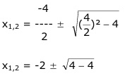
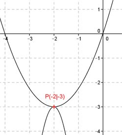

Aufgabe 96 In welchen Punkten schneiden sich die beiden Parabeln? y = -5x2 - 20x - 23 und y = 0,75x2 + 3x Gleichsetzverfahren: -5x2 - 20x - 23 = 0,75x2 + 3x |+5x2 -20x - 23 = 5,75x2 + 3x |+20x -23 = 5,75x2 + 23x |+23 5,75x2 + 23x + 23 = 0 |:5,75 x2 + 4x + 4= 0 p = 4 , q = 4 -4  x1,2 = -2 y = 0,75 * (-2)2 + 3 * (-2) = 3 - 6 = -3 Berührpunkt P(-2|-3) 